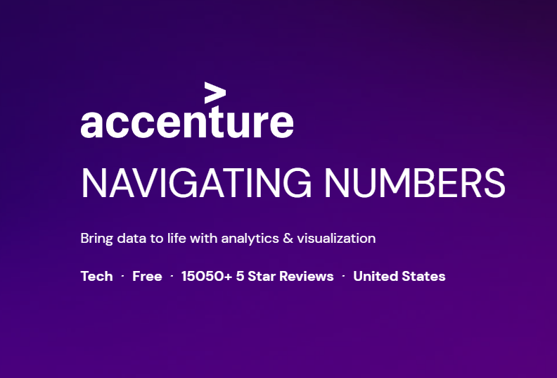

Work Experience

Tata Virtual Experience Program
I've completed the TATA Data Visualisation: Empowering Business with Effective Insights virtual experience programme from Forage! In this program, I applied my data visualization skills to communicate insights and drive business decisions. It was a great hands-on experience creating dashboards on real-world large datasets using Tableau.
The project I worked on was to create a dashboard that tracked the performance of a company's global sales data. The dashboard included charts and graphs that showed how the sales metrics were performing over time, as well as insights into Quarterly and Monthly sales.
During this experience, I have learnt how to:
- Review the given data and frame the Business Scenario.
- Choosing the right visuals in Analytical tools.
- Creating effective visuals and communicating Insights and Analysis.
- Prepared a presentation in relation to building creative insights and helping the CEO and CMOs understand their business needs and requirements.

Accenture Discovery Virtual Experience Program
During my participation in the Accenture Discovery Virtual Experience Program, I engaged in a series of impactful tasks that provided me with valuable insights and skills. I began with "Project Understanding," where I delved into the core of a project, gaining a comprehensive grasp of its objectives and intricacies. I performed "Data Cleaning and modelling" to refine and ensure data accuracy. Then, I transitioned into "Data Visualization & Storytelling," where I transformed complex data into visually engaging narratives. Finally, I gained real-world experience in "Presenting to the Client," honing my ability to communicate findings effectively to stakeholders—a crucial skill in the consulting field.
Through these experiences in Accenture Discovery, I gained a well-rounded understanding of the data analysis process and honed my ability to turn data into actionable insights, all while sharpening my presentation and communication skills. It was a valuable and enriching journey that expanded my knowledge and capabilities in the field of data analysis and consultancy.
Skills
Languages and Databases


Python HTML5 CSS3 JavaScript C++ MySQL
Libraries


Numpy Pandas OpenCV Scikit-learn Matplotlib Power Bi Tableau
Frameworks


Bootstrap TensorFlow PyTorch
Other


Git Aws